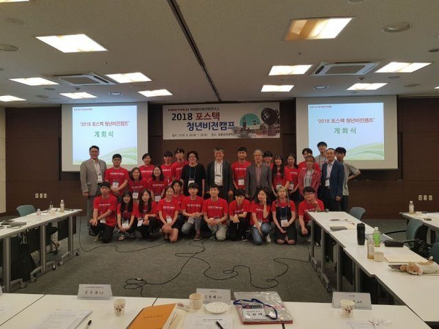

등록일 2018-09-06
“한국사회 보수·진보 이념 갈등 해결하려면…”
포스텍 청년 비전캠프 개최
“보수와 진보로 대변되는 이념의 갈등을 해결하기 위해서는 개인의 행동 변화로부터 시작하는 전략이 필요하다.”
한국 사회의 갈등을 해결하기 위한 방안을 대학생들의 눈을 통해 모색해보는 자리가 열렸다. 25일 포스텍에서 열린 ‘포스텍 청년 비전캠프’에서 대학생들은 한국 사회의 갈등을 해결하기 위해 시도돼 온 기존의 방안을 비판하며 새로운 방안들을 제안했다.
연세대 사회학과에 재학 중인 이태운 씨는 이날 이념 갈등을 해결하기 위해서는 정당구조의 개선이 필요하다는 정치인들의 주장에 반론을 제기했다. 이 씨는 “이념 갈등을 재생산하는 것은 각 개인이다”며 “갈등의 주체는 개인이다. 따라서 해결의 주체도 개인이 되지 못할 이유가 없다”고 말했다. 이 씨는 “큰 문제는 큰 도구로 해결한다는 비투비(Big to Big) 방식이 한국의 이념 갈등에서 실질적인 변화를 이끌지 못했다”며 “이념 갈등을 개인의 작은 행동 변화로부터 시작해 해결하려는 전략인 티투비(Tiny to Big) 방식을 제안한다”고 말했다. 이 씨는 “개인의 태도와 행동을 바꿔 상호이해를 토대로 사회적 변화를 이끌어 내야 한다”고 강조했다.
포스텍 청년 비전캠프는 한국 사회의 현안에 대한 진단과 해결책을 대학(원)생들에게 모색해보도록 하는 자리로 박태준미래전략연구소가 2014년부터 매년 열고 있다. 5회 째인 올해는 ‘한국 사회의 갈등을 해소하기 위한 방안’이라는 주제로 열렸다. 세대 갈등, 계층 갈등, 가치관 갈등, 이념 갈등. 젠던 갈등의 해결 방안에 대해 전국 46새 대학에서 92개 팀이 공모했고, 우수상을 받은 13개 팀이 이날 캠프에 초대돼 발표를 했다.
이날 발표에서 서울여대 언론영상학부에 재학 중인 백승연, 이수현 씨는 최근 고조되고 있는 페미니즘 논쟁을 포함한 젠더 갈등의 원인을 미디어 콘텐츠 분석을 통해 분석했다. 백 씨 등은 “남성들이 공감할 수 있는 페미니즘 콘텐츠가 필요하다”며 “페미니즘 콘텐츠의 방향성은 ‘그 사람도 물론 이상하지만 이에 영향을 미친 구조는 더 이상하다’는 점을 대놓고 보여주고, 페미니즘이 먼 얘기가 아니라 알고 보면 자신의 이야기라는 점을 심어주는 것이어야 한다”고 말했다.
세대 갈등의 해결 방안으로는 이화여대 교육공학과에 재학 주인 은주희, 온가영 씨와 성공회대 실천여성학과에 재학 주인 유미숙 씨가 비폭력 대화법(Nonviolent Communication)을 제안했다. 비폭력 대화는 다른 사람들과 유대관계를 맺을 때, 사람들 마음 안에서 폭력이 가라앉고 자연스러운 본성인 연민으로 돌아가는 데 도움이 되도록 하는 구체적인 대화방법이다. 이들은 “비폭력 대화를 연습하고 이를 실제 삶에 적용할 수 있는 다양한 학습자원과 학습지원 필요하며 이를 위해 Communication clearing center를 구축해 가정, 학교, 기업의 맥락에서 이를 습득하고 가족들이 이를 실천할 수 있도록 대화법과 관련된 교육 프로그램과 상담체계를 구축해야 한다”고 주장했다.
▽우수상 수상자, 제목
△황호연(서울과학기술대) 이준영(성균관대) 김찬영(서울과학기술대) ‘성(姓) 갈등, 꾸짓고(喝: 꾸짖을 갈) 등불(燈: 등 등)을 제시하다’ △백승연(서울여대) 이수현(서울여대) ‘젠더 갈등의 정점에 있는 이 시대, 남녀의 대화는 가능할까?-인터뷰 및 미디어 콘텐츠 분석을 중심으로’ △박병후(서울대) 김재은(서울시립대) 문예람(성균관대) ‘변수로 가득한 사회’ △박준수(경희대) ‘너와 대화하기 위해’ △은주희(이화여대) 온가영(이화여대) 유미숙(성공회대) ‘세대 간 갈등을 해결하기 위한 방안은 무엇인가?-가족 내 세대 간 공감을 이끄는 대화법 확산을 중심으로’ △육솔(포항공대) ‘같은 세상 다른 생각의 세대 갈등, 관념의 차이를 인정하기’ △이종민(단국대) ‘간극 속 상생의 길을 찾다’ △김경준(한양대) 김혜윤(한양대) ‘타자화, 캠퍼스를 뒤덮다’ △이태운(연세대) ‘이념의 경계 넘기 상호이해(mutual understanding)를 향해’ △신현솔(연세대) ‘우리는 충분히 슬퍼하고 있습니까?-갈등의 연쇄를 끊어내는 방법’ △김민식(중앙대) ‘우리는 패자가 없는 도시에 살고 싶다-공유도시에서 찾는 임대차 갈등 해결 방안’ △이은수(서울대) ‘이타주의와 배타주의 가치관 갈등을 넘어 바람직한 합의를 위해-예멘 난민 수용 이슈를 중심으로’ △배희진(단국대) ‘가치 갈등 해소를 위한 쉬운 답과 어려운 실천’
[출처]
이현두 기자
ruchi@donga.co,m
, [동아일보]“한국사회 보수·진보 이념 갈등 해결하려면…” 포스텍 청년 비전캠프 개최_2018.8.24

